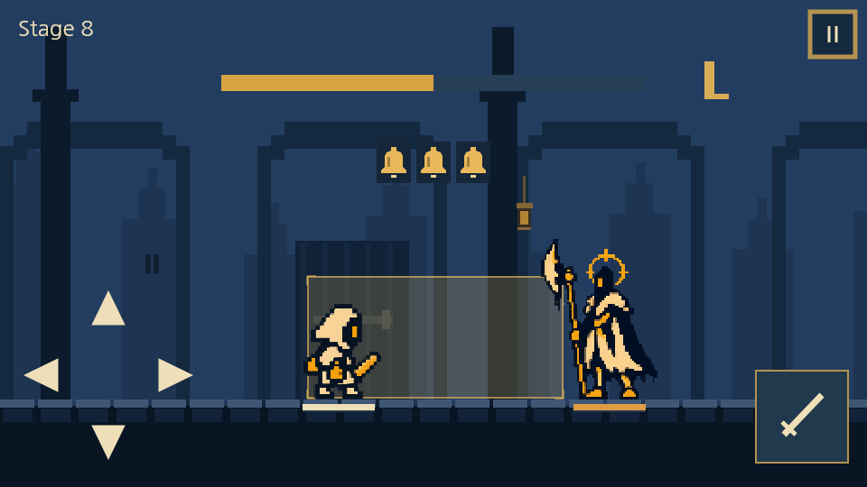
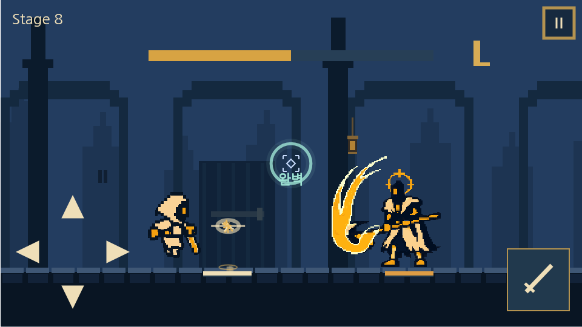
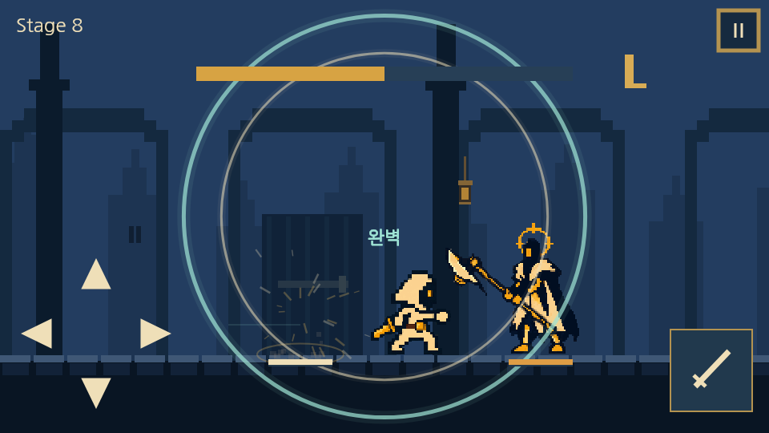

같은 속도로 중앙까지
첫 타격600ms 전, 화면 왼쪽과 오른쪽 끝에서 흰빛 파동이 출발합니다. 가속·감속 없이 중앙까지 이동해 실제 타격 시각 T에 만납니다. 마지막60ms에는 중앙 마름모의 모서리가 켜집니다.
기존 일반160ms·완벽60ms 판정창을 넓히는 변경은 포함하지 않았습니다. 입력 목표가 보이는 것만으로 충분한지는1배속 미리보기에서 먼저 판단합니다.
회피할 순간을 양옆에서 다가오는 흰빛 파동으로 보여줍니다. 화면 중앙보다 조금 위에는 종을 배치해 단발인지, 연속 공격인지 예고 시작부터 구분합니다.
단발·2연타·3연타 / 기본·빠른 박자 / 1배속·느리게 / 직접 타이밍 입력을 비교할 수 있습니다. ‘채택할 후퇴 회피’와 ‘채택할 공격 접근’은 기존 미리보기의 동작을 바로 재생합니다.
첫 타격600ms 전, 화면 왼쪽과 오른쪽 끝에서 흰빛 파동이 출발합니다. 가속·감속 없이 중앙까지 이동해 실제 타격 시각 T에 만납니다. 마지막60ms에는 중앙 마름모의 모서리가 켜집니다.
기존 일반160ms·완벽60ms 판정창을 넓히는 변경은 포함하지 않았습니다. 입력 목표가 보이는 것만으로 충분한지는1배속 미리보기에서 먼저 판단합니다.
앞3회→뒤3회 예고가 모두 끝난 뒤 앞→뒤 공격 순서를 유지합니다. 첫 타격이 끝나면 다음 파동이 양끝에서 출발합니다. 후속 타격까지 기본360ms·빠름320ms 동안 모입니다.
다음 회피 안내가 나타나면 이전 성공 파동은 옅어집니다. ‘완벽’은 중앙 목표점 아래에 표시해 다음 입력 지점을 가리지 않습니다.
| 패턴 | 기본안 중앙 도착 = 타격 | 빠른안 중앙 도착 = 타격 |
|---|---|---|
| 단발 | 900ms | 650ms |
| 2연타 | 1680 / 2040ms | 1180 / 1500ms |
| 3연타 | 2460 / 2820 / 3180ms | 1710 / 2030 / 2350ms |

첫 예고부터 전체 공격 수만큼 종을 보여줍니다. 피했든 맞았든 각 타격이 끝나면 왼쪽 종부터 하나씩 사라집니다. 남은 종의 위치는 움직이지 않습니다.
곧 타격할 종에는 밝은 양옆 선을 붙입니다. 금빛 사각형 색을 바꾸지 않아도 실루엣 개수로 남은 공격 수를 알 수 있습니다. 적이 기절하거나 죽어 공격이 취소되면 종과 수렴 파동도 즉시 사라집니다.
사용자가 선택한 기준은 v5.5 미리보기의 dodge / heroState / drawHero입니다. 새 시안에서도 이 자동 시연의 이동 곡선과 포즈를 유지했습니다.
| 동작 | 현재 인게임에서 확인한 차이 | 채택할 미리보기 기준 |
|---|---|---|
| 후퇴 회피 | 입력 시 후퇴 위치로 즉시 이동, 활성160ms 종료 후 원점 복귀 | 90px 후퇴를50ms에 진행 → 타격 뒤100ms 유지 →130ms에 복귀. 초반이 빠른 1−(1−p)³ 곡선 |
| 공격 접근 | 120ms 동안 달리기 포즈, SmoothStep 이동. 일반 적 기준210px 접근,300~460ms 복귀 | 공격 준비 포즈로165px를120ms에 접근. 입력200ms에 타격,230~500ms에 같은 곡선으로 복귀 |
| 완벽 반격 | 유효한 공격 입력을 받을 때 원점 복귀 후 접근 | 즉시 원점 복귀는 유지. 이어지는 접근·베기·복귀의 곡선과 포즈를 미리보기에 맞춤 |


적용 시 이동 샘플을 실제 몸체 판정과 공유합니다. 늦은 유효 입력은 남은 타격 시간에 맞춰 진입을 압축하고, 정확히 T에 수락된 입력은 해당 프레임에 회피 위치를 사용합니다. 보스·중간보스는165px를 강제로 적용하기보다 적 몸체와의 간격을 검증해 같은 접근감으로 맞춥니다. 현재 게임의 공격 쿨타임·피해·회피 보너스를 새 애니메이션이 바꾸지 않도록 검증합니다.
종은 화면 정규화(0.5,1/3), 아이콘28×34px, 슬롯 간격44px입니다. 수렴점은 뷰포트 정중앙(0.5,0.5), 파동 시작점은 좌·우 화면 경계입니다. 화면 흔들림과 캐릭터 이동을 따라가지 않습니다.
종은 표시 전용이며 터치 영역이 없습니다. 기존 입력 버튼과 안전 영역은 유지합니다. 작은640×360 시안에서도1·2·3개의 실루엣과 중앙 목표점을 구분할 수 있도록 확인했습니다.
| 상태 | 동작 |
|---|---|
| 첫 예고 | 전체 종 표시. 첫 수렴 파동은 T−600ms부터. |
| 타격 | 중앙 도착과 실제 판정은 같은 T. 종 하나 소모. 정확히 피했을 때만 청록 확산. |
| 일시정지·재개 | 종·수렴·성공 이펙트 모두 같은 전투 시계를 정지·재개. |
| 처치·기절·전투 종료 | 취소된 큐의 종과 수렴 예고를 즉시 제거. |
| 연출 줄이기 | 타이밍에 필요한 일정한 좌우 이동은 유지. 잔상·번짐·확산·입자·흔들림 제거. |
| 소리 끄기 | 종 개수와 파동 위치만으로 의미 전달. 이 미리보기는 무음. |
이번 검증은 로컬 Canvas 렌더와 시간 샘플링입니다. 단발·네 종류2연타·3연타를 기본/빠른 박자로 확인하고, 종 소모·중앙 도착·판정 구간·직접 입력 결과·정지·축소 화면·기존 미리보기 동작을 검사했습니다. 실제 브라우저 터치 지연과 기기 난도는 아직 검증하지 않았습니다.
게임 적용 때는 Core의 타격 큐를 수렴·종·공격 모두가 읽어야 합니다. 독립 UI 타이머로 판정을 추정하지 않습니다. 후퇴와 접근은 포즈만 교체하지 않고 이동 곡선·거리·접지·공격 타격점을 같이 비교합니다.